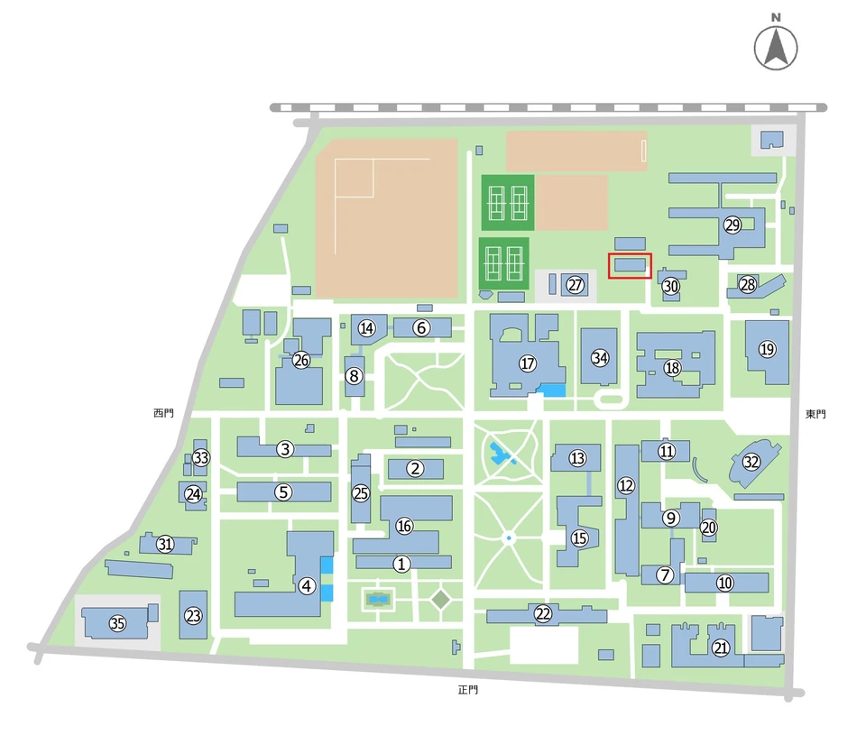

TUAT SHOGI CLUB
入部案内
初心者・経験者を問わず、将棋を楽しみたい方を歓迎しています。
新入生の方へ
新入生の皆さん、入学おめでとうございます。当将棋部には、全国大会を目指す人から趣味として将棋を楽しむ人まで、さまざまな部員がいます。初心者から有段者まで大歓迎です。
活動場所
普段は小金井キャンパス欅寮近くのサークル棟B棟の部室で活動しています。

活動内容
毎週金曜日の活動日に部員同士で対局し、棋譜並べ・詰将棋・変則将棋の研究などを行っています。一年を通して大会や部内戦などのイベントもあります。
部費
部費はありません。
入部・見学方法
見学や入部をご希望の方は、将棋部の公式X（旧Twitter）にDMでその旨をご連絡ください。みなさんの参加をお待ちしています。
XのDMで連絡する（新しいタブで開く）その他
兼部は自由です。実際にほかの部・サークルと掛け持ちをしている部員も多くいます。